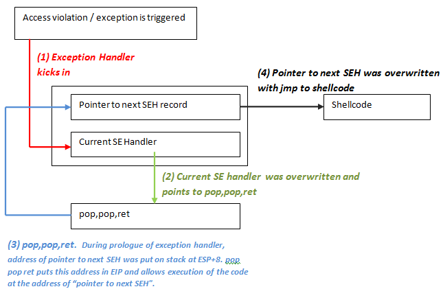

There is a way around the XOR 0x00000000 protection and the SafeSEH protections. Since you cannot simply jump to a register (because registers are xored), a call to a series of instructions in a dll will be needed.
(You should try to avoid using a call from the memory space of an OS specific dll, but rather use an address from an application dll instead in order to make the exploit reliable (assuming that this dll is not compiled with safeSEH). That way, the address will be *almost* always the same, regardless of the OS version. But if there are no DLL’s, and there is a non safeseh OS module that is loaded, and this module contains a call to these instructions, then it will work too.)
The theory behind this technique is : If we can overwrite the pointer to the SE handler that will be used to deal with a given exception, and we can cause the application to throw another exception (a forced exception), we should be able to get control by forcing the application to jump to your shellcode (instead of to the real exception handler function). The series of instructions that will trigger this, is POP POP RET. The OS will understand that the exception handling routine has been executed and will move to the next SEH (or to the end of the SEH chain). The pointer to this instruction should be searched for in loaded dll’s/exe’s, but not in the stack (again, the registers will be made unusable). (You could try to use ntdll.dll or an application-specific dll)
One quick sidenote : there is an excellent Ollydbg plugin called OllySSEH, which will scan the process loaded modules and will indicate if they were compiled with SafeSEH or not. It is important to scan the dll’s and to use a pop/pop/ret address from a module that is not compiled with SafeSEH. If you are using Immunity Debugger, then you can use the pvefindaddr plugin to look for seh (p/p/r) pointers. This plugin will automatically filter invalid pointers (from safeseh modules etc) and will also look for all p/p/r combinations. I highly recommend using Immunity Debugger and pvefindaddr.
Normally, the pointer to the next SEH record contains an address. But in order to build an exploit, we need to overwrite it with small jumpcode to the shellcode (which should sit in the buffer right after overwriting the SE Handler). The pop pop ret sequence will make sure this code gets executed
In other words, the payload must do the following things
- cause an exception. Without an exception, the SEH handler (the one you have overwritten/control) won’t kick in
- overwrite the pointer to the next SEH record with some jumpcode (so it can jump to the shellcode)
- overwrite the SE handler with a pointer to an instruction that will bring you back to next SEH and execute the jumpcode.
- The shellcode should be directly after the overwritten SE Handler. Some small jumpcode contained in the overwritten “pointer to next SEH record” will jump to it).

As explained at the top of this post, there could be no exception handlers in the application (in that case, the default OS Excecption Handler takes over, and you will have to overwrite a lot of data, all the way to the bottom of the stack), or the application uses its own exception handlers (and in that case you can choose how far ‘deep’ want to overwrite).
A typical payload will look like this
[Junk][nSEH][SEH][Nop-Shellcode]
Where nSEH = the jump to the shellcode, and SEH is a reference to a pop pop ret
Make sure to pick a universal address for overwriting the SEH. Ideally, try to find a good sequence in one of the dll’s from the application itself.
Before looking at building an exploit, we’ll have a look at how Ollydbg and windbg can help tracing down SEH handling (and assist you with building the correct payload)
The test case in this post is based on a vulnerability that was released last week (july 20th 2009).